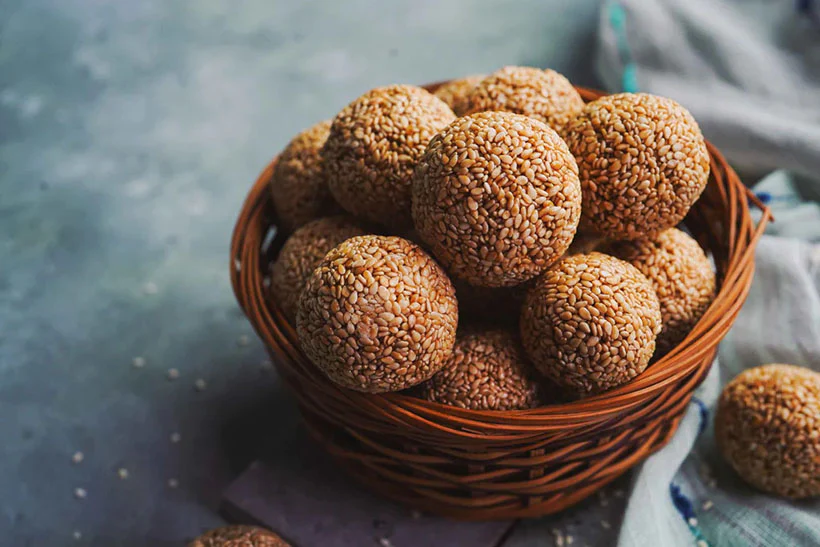
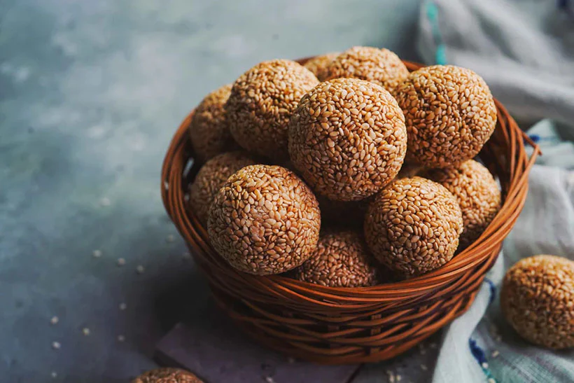
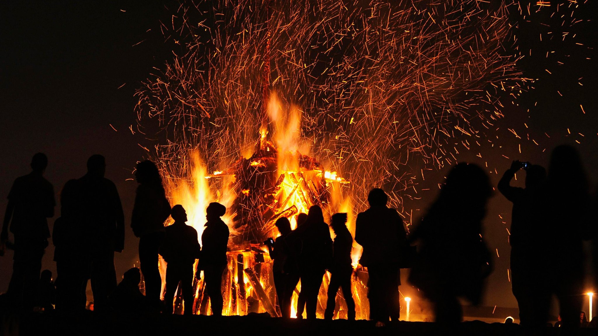
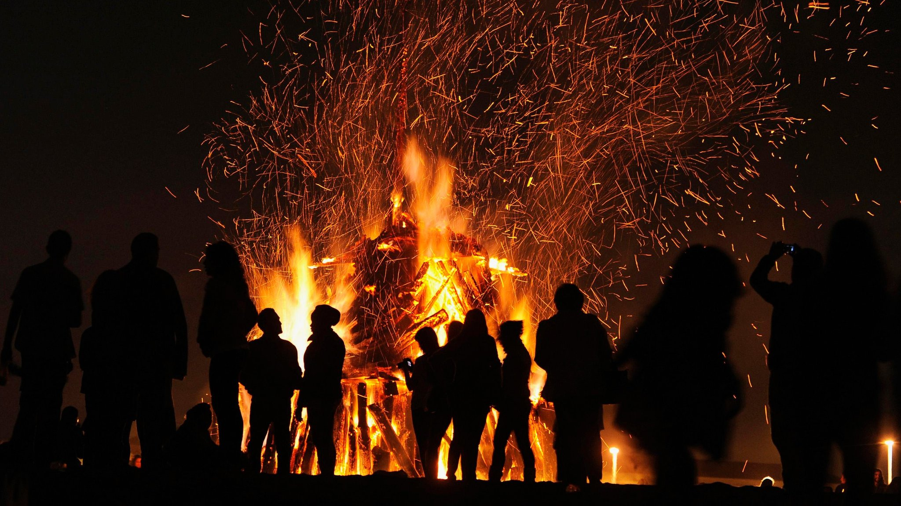
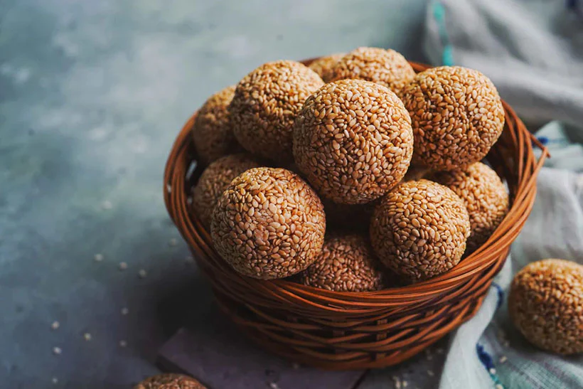
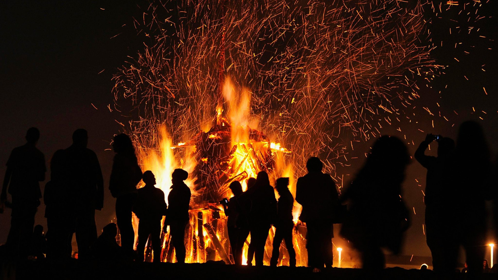

Celebration Gallery
 


 

Makar Sankranti marks the transition of the Sun into Capricorn (Makara) and is celebrated across India with various traditions such as kite flying, cooking special delicacies, and offering gratitude to nature.
A signature activity of Makar Sankranti, symbolizing joy and unity.
Special dishes like tilgul and pongal are prepared to celebrate the harvest.
In some regions, people gather around bonfires for warmth and celebrations.


A delicious sesame and jaggery sweet.
A classic South Indian rice dish cooked with jaggery.